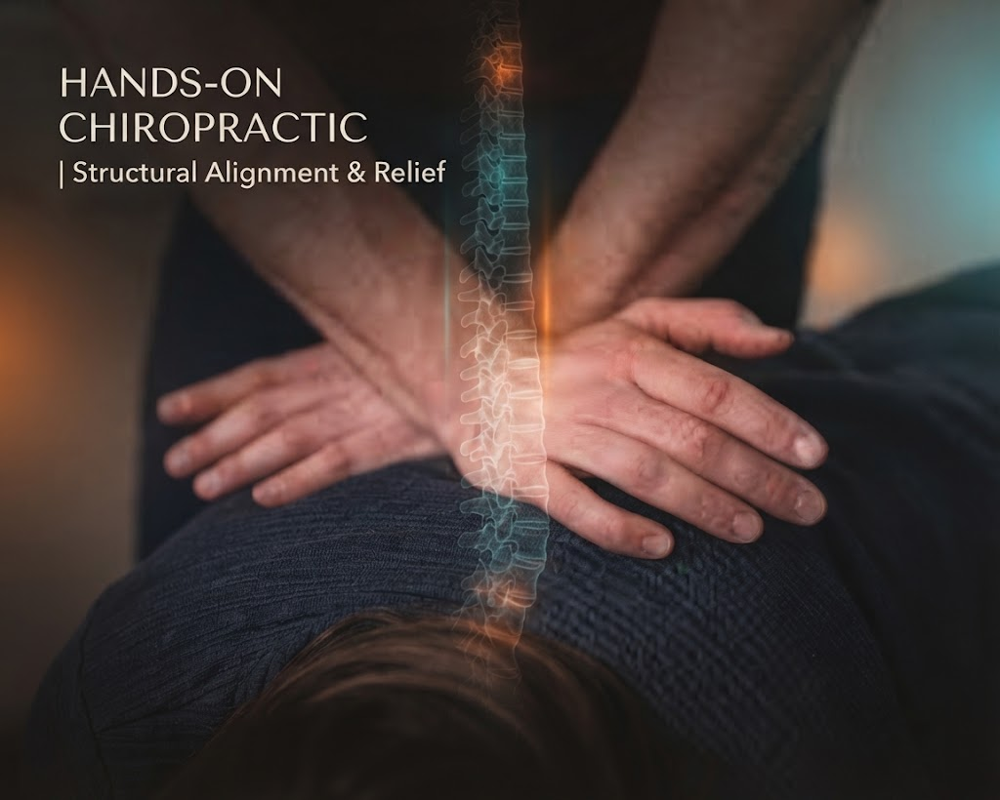
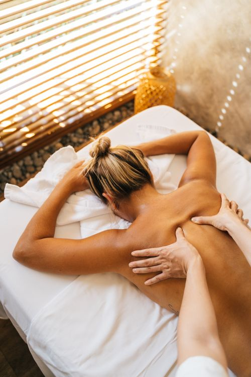

Hands-On Chiropractic
& Structural Alignment
Individual attention with hands-on adjustments and diversified chiropractic techniques.
- Spinal & extremity adjustments
- Auto flexion / distraction
- Hot & cold therapy
Dr. Bruce Robins
2211 N Dixie Highway, Wilton Manors, FL 33305Your neighborhood. Your care.
Chiropractic and massage therapy,
rooted in South Florida.
Monday · Wednesday · Friday
9 am – 1 pm & 3 pm – 6 pm
Closed Tuesday, Thursday, Saturday & Sunday
Meet your chiropractor
For over 25 years, Dr. Bruce Robins has cared for the South Florida community with a personal approach to chiropractic care.
At Robins Chiropractic Center, hands-on adjustments and clinical massage come together in a welcoming practice where the patient comes first. It starts with a conversation about you, your comfort, and your care.
Two complementary approaches.
One focus: you.

Individual attention with hands-on adjustments and diversified chiropractic techniques.

Clinical massage therapy that complements your chiropractic care, with attention to muscular tension and comfort.
Call to discuss your symptoms and whether an evaluation at our practice is right for you.
A welcoming practice in
the heart of Wilton Manors.
2211 N Dixie Highway, Wilton Manors, FL 33305
The patient perspective
A good relationship starts with trust.
Find the practice on Google“Dr. Robins and his team are outstanding!”
“He doesn't just treat you, he educates you through the process.”
“Great chiropractic center! Very friendly and knowledgeable staff. Highly recommended!”
“Bruce is amazing! Hits every spot you need when it comes to an adjustment!”
“Always takes great care of me!”
“He and Jason are very professional. The office is conveniently located and very well kept.”
“Also Jason and the rest of the staff are all amazing people.”
“Dr Robins has been my chiropractor for several years. One of the best doctors and people in general around.”
“Staff is great, friendly and I never wait too long when I go.”